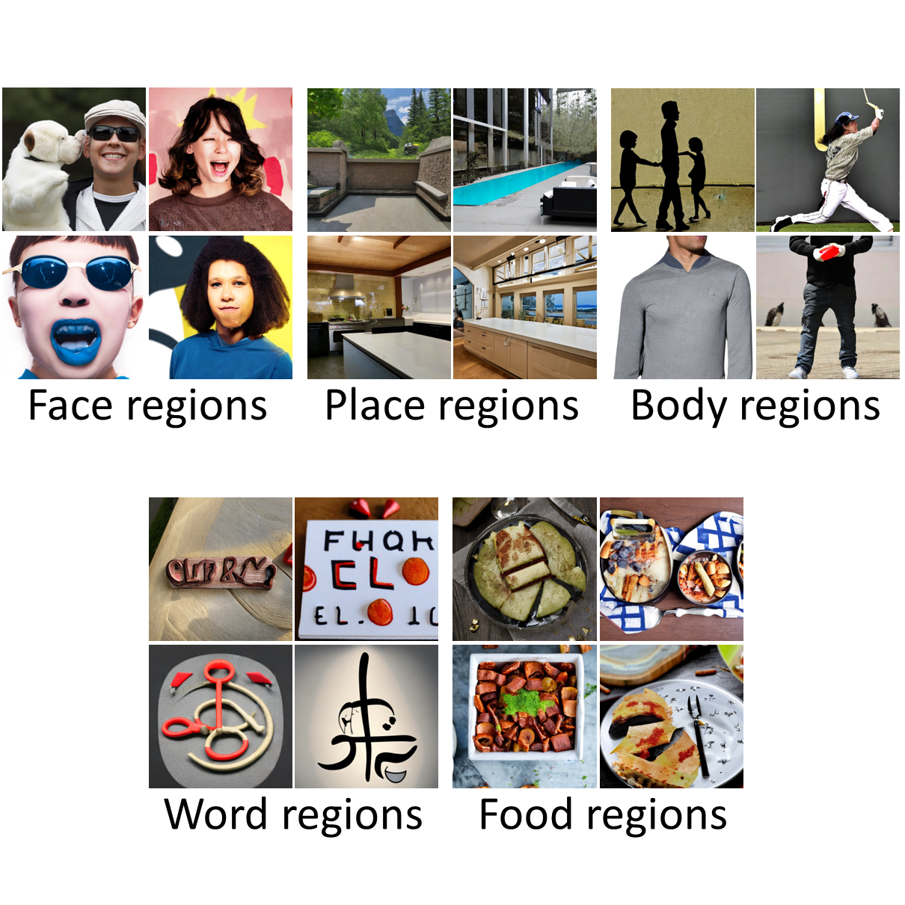

|
Andrew Luo I am an incoming Assistant Professor at the University of Hong Kong at a joint position between the Musketeers Foundation Institute of Data Science and the Psychology Department. Formerly a PhD student at Carnegie Mellon University (defended Sept 2024), affiliated with the Machine Learning Department and the Neuroscience Institute. I completed a joint PhD in Neural Computation & Machine Learning. I was co-advised by Leila Wehbe and Michael Tarr. I earned my undergraduate degree in Computer Science from MIT in 2019, and a Master of Science in Machine Learning Research from CMU. My current research focuses on computational methods for studying visual perception in the human brain, with experience in 3D generative models. Email / CMU Email / Google Scholar / Github / WeChat |
ResearchI'm interested in generative models and their applications in studying the brain. My current research focuses on semantic divisions within the human visual cortex. |

|
BrainSCUBA: Fine-Grained Natural Language Captions of Visual Cortex Selectivity
Andrew F. Luo, Margaret M. Henderson, Michael J. Tarr, Leila Wehbe ICLR 2024 arxiv page / bibtex We propose a way to leverage contrastive image-language models (CLIP) and fine-tuned language models to generate natural language descriptions of voxel-wise selectivity in the higher order visual areas. |
|  |
Brain Diffusion for Visual Exploration: Cortical Discovery using Large Scale Generative Models
Andrew F. Luo, Margaret M. Henderson, Leila Wehbe*, Michael J. Tarr* * Co-corresponding authors NeurIPS 2023 oral, (top 0.7% of all submissions) project page / bibtex / code We propose a way to generate images that activate regions of the brain by leveraging natural image priors from Diffusion models. |

|
Neural Selectivity for Real-World Object Size In Natural Images
Andrew F. Luo, Leila Wehbe, Michael J. Tarr, Margaret M. Henderson BioRxiv, 2023 (in submission) bioRxiv page / bibtex We examine the selectivity of the brain to real-world size in complex natural images. |
|
Learning Neural Acoustic Fields
Andrew F. Luo, Yilun Du, Michael J. Tarr, Joshua B. Tenenbaum, Antonio Torralba, Chuang Gan NeurIPS 2022 (Summer intership at IBM) project page / bibtex / code We propose a learnable and compact implicit encoding for acoustic impulse responses. We find that our NAFs can achieve state-of-the-art performance at a tiny size footprint. |
|

|
Prototype memory and attention mechanisms for few shot image generation
Tianqin Li*, Zijie Li*, Andrew F. Luo, Harold Rockwell, Amir Barati Farimani, Tai Sing Lee ICLR 2022 bibtex / code We show that having a prototype memory with attention mechanisms can improve image synthesis quality, and learn interpretable visual concept clusters. |

|
SurfGen: Adversarial 3D Shape Synthesis with Explicit Surface Discriminators
Andrew F. Luo, Tianqin Li, Wen-Hao Zhang, Tai Sing Lee ICCV 2021 arxiv page / bibtex / code We propose a surface based discriminator for implicit shape generation. Our discriminator uses differentiable ray-casting and marching cubes. |

|
End-to-End Optimization of Scene Layout
Andrew F. Luo, Zhoutong Zhang, Jiajun Wu, Joshua B. Tenenbaum CVPR 2020 oral project page / bibtex / code We propose contrained scene synthesis using graph neural networks, we show that generated scenes can be refined using differentiable rendering. |

|
Learning to Infer and Execute 3D Shape Programs
Yonglong Tian, Andrew F. Luo, Xingyuan Sun, Kevin Ellis, William T. Freeman, Joshua B. Tenenbaum, Jiajun Wu ICLR 2019 project page / bibtex / code We propose a learnable decomposition of 3D shapes into symbolic programs that can be executed. |